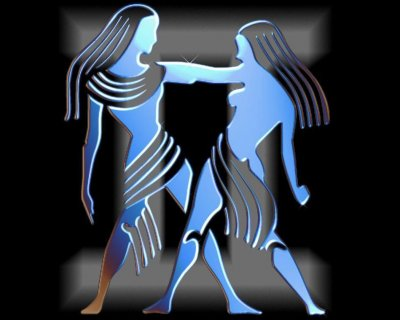

(21 Mayıs- 21 Haziran)
GRUP:Hava, erkek, pozitif, değişken
YÖNETİCİ GEZEGEN:Merkür
RENK:Sari, gri, mavi, açık mavi, siyah
UĞURLU TAŞ:Akik
ŞANSLI SAYI:5
ŞANLI GÜN:Çarşamba
KARŞIT BURÇ:Yay
ŞEHİRLER:Londra, San Francisco, Yeni Delhi
METAL:Civa
ÇİÇEKLER:Mimoza, çiğdem, lavanta, açelya
AĞAÇLAR:Fındık, ceviz, mersin ağacı
İkizler burcu insanları hızlı düşüncelerine uygun çabuk hareket ederler. Ayni anda birkaç işi birden yapabilirler. Onların adapte olamayacakları iş yoktur. Bu yüzden değişik karakterli olmaları ile tanınırlar. Bu yapılarını her zaman görebilmek mümkündür. Son derece neşeli ve mutlu oldukları bir anda, aniden mutsuz olabilirler. Çevreleri tarafından sürekli yanlış anlaşılabilirler. Herhangi bir konuda bilgileri az bile olsa, bunu çok iyi gizlemeyi başarırlar. Aksine; kulaktan dolma duydukları bilgileri öyle ustaca anlatırlar ki, dinleyenler onları o işin uzmanı sanırlar. Pratik zekalarıyla, çekici ve akıllıdırlar. Bu nedenle onları tanımlayan sözcük 'Düşünüyorum' dur. Fakat, bu düşünceleri hep yeni arayışlara doğru yönelmiştir. Bu yüzden uzun soluklu çalışmalar onları yorar. Kendilerini iyi eğitmiş ikizler hoş ve zariflikleri ile yaşamı zevkli kılarlarken, eğitimsiz olanlar da yaşamı o kadar çekilmez hale getirirler. Kendi paralarına karşı tutumlu davranmalarına karşın, başkalarının paralarını kolayca harcayabilirler.
Güzel bir fiziğe sahiptirler. Uzun boy, biçimli bir beden, uzun kol ve bacaklar, koyu kumral saçlar, kahverengi gözlere sahiptirler. Gözleri keskindir ve uzağı çok iyi görürler. Gözlemcilikleri çok güçlüdür